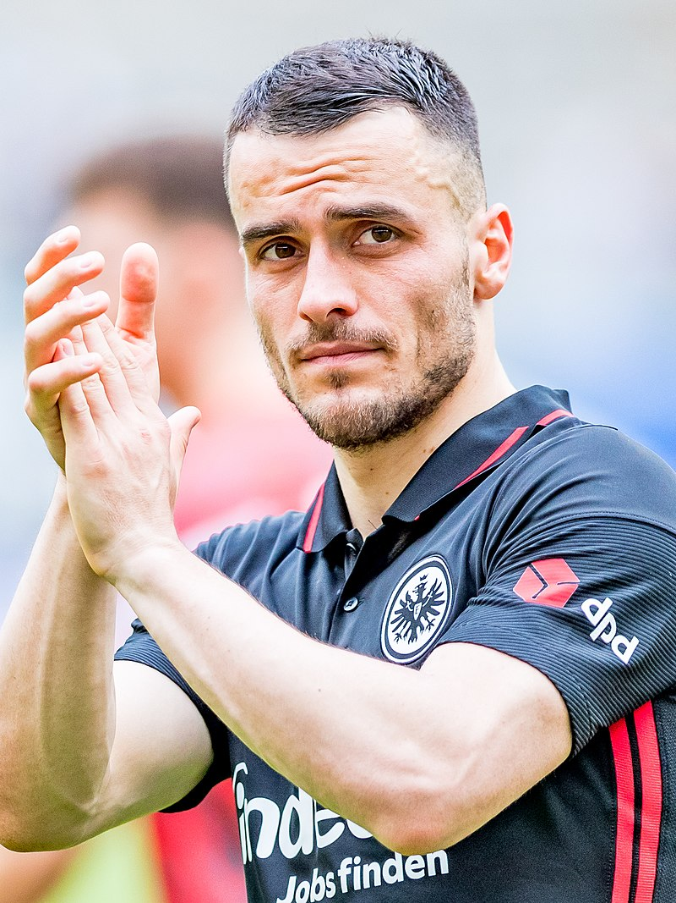
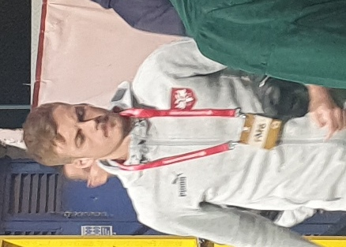
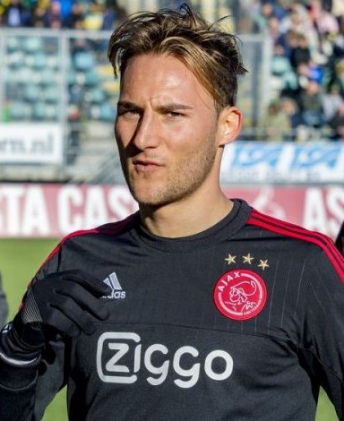
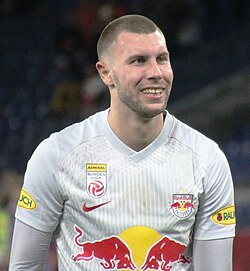
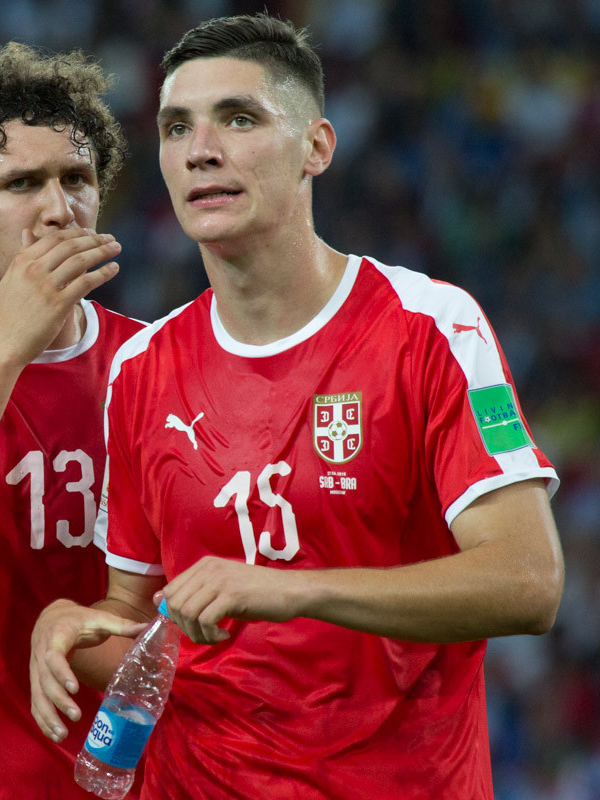
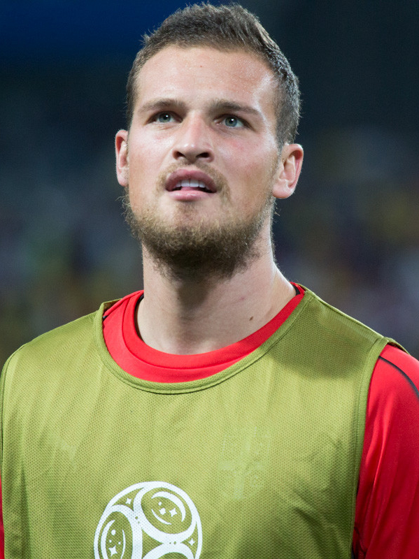
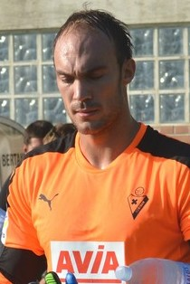
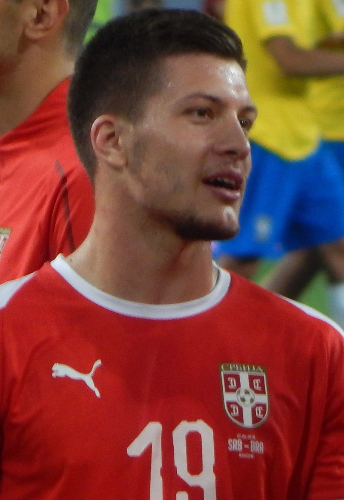
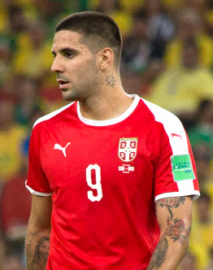
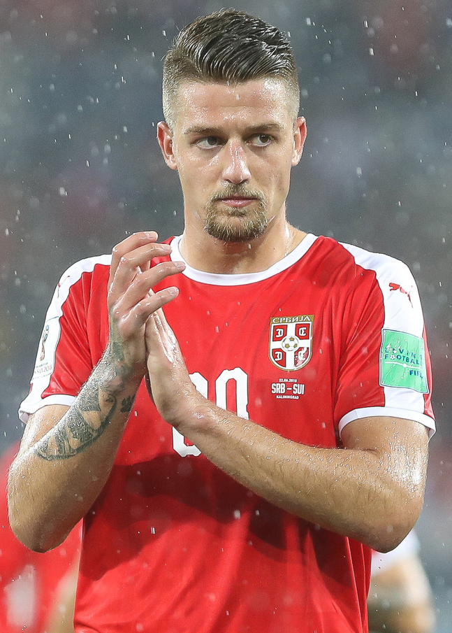

| Nombre | Posición | Edad | Bibliografía | Portada |
|---|---|---|---|---|
| Filip Kostić | Extremo Izquierdo | 32 | Jugador de la Juventus, famoso por sus centros precisos y velocidad por la banda. |  |
| Ivan Ilić | Mediocampista | 24 | Mediocampista del Torino, talentoso en distribución y visión de juego. |  |
| Saša Lukić | Mediocampista | 29 | Centrocampista del Fulham, reconocido por su capacidad defensiva y pase. | |
| Nemanja Gudelj | Mediocampista Defensivo | 34 | Jugador del Sevilla, experto en cortar juego y aportar equilibrio al medio campo. |  |
| Strahinja Pavlović | Defensa Central | 24 | Defensa del RB Salzburg, fuerte en el juego aéreo y en la marca. |  |
| Nikola Milenković | Defensa Central | 28 | Defensa de la Fiorentina, sólido, confiable y con gran capacidad de anticipación. |  |
| Predrag Rajković | Portero | 29 | Portero del Mallorca, seguro bajo los tres palos y con buenos reflejos. |  |
| Marko Dmitrović | Portero | 33 | Arquero del Sevilla, reconocido por su experiencia y liderazgo en el área. |  |
| Luka Jović | Delantero | 27 | Delantero del Milan, con olfato goleador y técnica en el área. |  |
| Dušan Vlahović | Delantero | 25 | Delantero de la Juventus, estrella ofensiva, potente y con gran definición. | |
| Aleksandar Mitrović | Delantero | 31 | Delantero del Al-Hilal, máximo goleador histórico de Serbia. |  |
| Sergej Milinković-Savić | Mediocampista | 30 | Mediocampista del Al-Hilal, completo, con gran visión, físico y llegada al gol. |  |